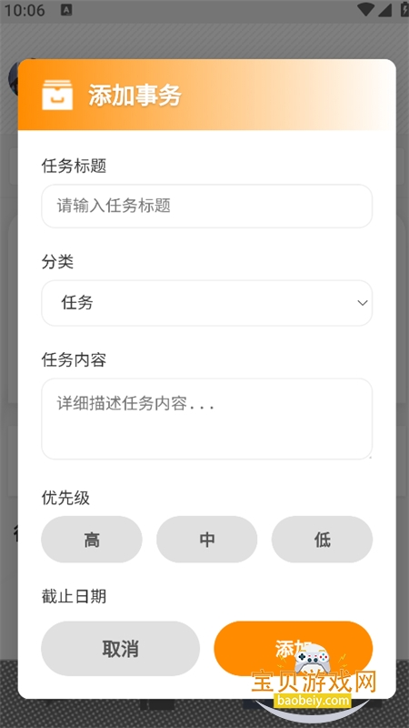

把明日方舟玩成一条流水线：ZOOT 里我那套省体力的日常
从理智提醒到角色创作分享，以前要开三个 app、记四张表，现在 ZOOT 一条链收走——讲清每个环节怎么接、容易断的地方怎么补。
我每周要做三件事：理智不溢出、寻访不亏票、原创角色有人看。
以前这三件事散在三个地方：理智靠手机闹钟手动倒计时（8 分钟 1 点，算到 135 就响）、寻访记录用 Excel 自己数六星概率、角色写完同人设定要发论坛等审核。三个工具来回切，闹钟响了经常在开会错过、Excel 公式偶尔算错一轮、论坛审核慢的时候写好的设定放凉了。
然后把这套流程塞进了在官网上能找到的 ZOOT。不是什么颠覆性的变化——就是把三个环节的衔接点从"手动复制"改成了"同一个 app 里跳一步"。讲讲具体怎么接的，给同样在方舟上花时间的朋友一个参考。
旧流程卡在哪
先把原来的链条拆开，才能看出哪里值得动。
理智这块最蠢：18 小时从 0 回满，我设了一个每晚 11 点的闹钟去清，但经常加班或忘了。第二天早上打开游戏，理智已经满了三个小时——溢出就是 20 多点，等于三管体力药白扔。试过专门记一个 Notion 表格追踪恢复时间，但每天手动填当前值太反人性，坚持了两周就放弃了。
寻访记录那块用 Excel，自己写了个小公式算六星出货率。问题是每抽一次要手动切 app 记录编号和结果，抽卡的好心情在"开 Excel 输数字"这一步就没了。更糟的是偶尔输错行，整列概率算出来不准，白算。
角色创作这块其实最耗心力。写完一个原创干员的背景设定，得找地方存人设、找地方放立绘、找地方分享。以前是在 pixiv 发图 + 在 NGA 发帖 + 在手机备忘录存设定，三个地方各一份，改一个设定要同步三处。
新流程：ZOOT 插进了哪一环
不是把所有事都堆进 ZOOT——那样反而重。它接管了三个衔接点，让原来"开三个 app 来回切"变成"在 ZOOT 里跳一步，再手动碰一下必要的外部工具"。
第一环：理智自动管，不用我算
以前的核心动作是"每隔一段时间开游戏看一眼"。现在 ZOOT 帮我算完了。打开理智提醒功能，输入当前理智值（进游戏看一眼就行，一分钟的事），设好上限和提醒时机——默认快满前 10 分钟推通知，我额外加了 50% 和 80% 的两次提醒，怕 10 分钟那次刚好在地铁上没看见。
推送走手机系统通知，这里有个细节：ZOOT 的后台容易被系统杀进程，我专门把它加进了电池优化白名单，通知权限也确认是"重要"级别。加完之后没漏过一次提醒。另外设了 22:00 到次日 8:00 的休眠时段，深夜不打扰——这些进阶设置我是翻了ZOOT文档才摸清楚的。
这一步省的不是"每次打开游戏"那几秒钟——省的是"每隔 8 分钟就得惦记一下"的持续注意力。以前脑子里一直挂着个半残的定时器，现在完全不用想。
第二环：寻访记录从"手动输表"变成"抽完就走"
这环节 ZOOT 其实没给我自动抓数据的能力——方舟的抽卡结果在服务器端，本地 app 拿不到。但 ZOOT 提供了一个内置的寻访追踪器，我抽完卡点一下快速按钮就行，比开 Excel 输一行快得多。
它自动累计抽数和六星数，实时算出出货率。更方便的是跟理智提醒联动：理智满了通知我去刷图，刷图完顺手抽几发，抽完直接在追踪器里点一下六星或五星的按钮，整个流程在同一个 app 里就闭环了。
以前抽卡完要切两个 app 记录，现在抽完走回首页点一下就完事。少了两次手动切换。
第三环：角色创作到分享的最短路径
这是 ZOOT 最让我惊喜的环节。
角色编辑器内置了人设参数模板——名字、背景故事、性格标签、AI 预设对话风格，填完就能和内置干员一样在通讯录里聊天、进群。不需要我自己搭 prompt、找 API、写前端界面。填设定的时候会自动走 DeepSeek 大模型推理，写对话完全是即填即用的体验。
填完设定、选好头像立绘，点右上角的发布按钮进博士广场。填一句话介绍和标签（同人、原创、搞笑、治愈几个分类），提交等审核。审核过了角色就在广场里上线，其他玩家能直接试用和收藏。

以前从"写完设定"到"别人能玩到"要跨三个平台——存设定、传图片、发帖。现在"写完设定"到"别人能玩到"就是在 ZOOT 里填完发布信息那几秒钟。中间没有任何平台切换。广场本身就是社区，玩家试用后能给收藏和点赞，相当于自带了反馈渠道。
两个容易断链的地方
上面三步看起来顺，但实际跑下来有两个环节容易卡壳，提前说一下。
备份不能省，尤其是签名冲突的时候
ZOOT 换版本的时候偶尔会遇到签名冲突——同包名但签名不同，装不上。卸载旧版能解决，但卸载会清掉所有本地数据：聊天记录、人设修改、寻访追踪进度，全部归零。
解决方法很简单：换版前手动导出一次备份。打开设置 → 数据管理 → 导出备份，把备份文件传到网盘或电脑上。卸载旧版后，新版本直接从下载拿，装完再导入回来就行。三步，两分钟的事。我现在养成了习惯——每次看到 ZOOT 有更新，先备份再卸载。
立绘尺寸会卡编辑器
编辑器支持从手机相册选图当头像，但我第一次传了一张 2MB 的横向截图，结果被自动裁剪成正方形后糊了。后来发现立绘头像建议正方形、清晰度在 1000×1000 以上，选图的时候顺手裁一下就行。这个坑文档里提过一次，但实操过才记得住。
效果和边界
跑了差不多一个月，量化一下省了什么：
- 理智溢出：原来每周大概浪费 15~20 点体力，现在几乎没有。通知准到什么程度？上周出差在高铁上，提前 10 分钟收到提醒，停车间隙打开游戏清了体力。
- 寻访记录：每抽卡少两次 app 切换，一个月下来大概省了三四分钟的手动录入时间。不多，但消除了"输错行导致概率不准"这种隐性成本。
- 角色创作：从"写完设定"到"有人能玩"，原来要半小时（存设定、传图、发帖、等论坛审核），现在 5 分钟。上周我写了一个医疗系原创干员，上午写完发布，下午就有 12 个人试用。
但这套流程不是万能的。如果你是那种一天能抽几百发寻访的重氪玩家，手动点追踪器可能还是嫌慢——这种情况 Excel 批量导入反而更快。如果你追求的是精美的同人插画分享，ZOOT 广场的社区氛围比不上 pixiv 或 NGA。它解决的是"游戏日常管理 + AI 角色创作"这块的效率问题，不是做完整的同人平台。
对我这种每天抽一二十发、偶尔写个原创角色的普通玩家来说，这套流程已经够用了。三个 app 变一个，三个衔接点变成一个跳转。少了惦记，多了体验。
如果想看更详细的设置说明和功能案例，可以去 GitHub、Gitee、GitCode 找对应的资料目录，文档维护一直同步着，国内网络访问哪个方便就看哪个。